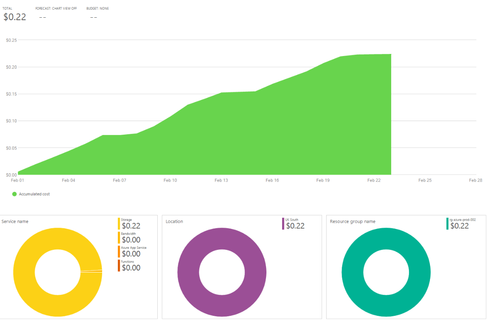

Clive Norman
function Get-Profile() {
Experienced IT professional with over 25 years expertise
across Microsoft technologies, cloud infrastructure,
networking, scripting and database management, with a
focus on third-line support. Offers advanced knowledge of
IT security and threat management, supported by a solid
background in IT strategy and operations. A strong team
player, known for clear communication and excellent
interpersonal skills that enable effective collaboration.
}
SharePoint (SPFx) calling a third‑party Boomi EndPoint (30,000 calls per month).
Looming Deadline

Back in 2015 I wrote... "Welcome to Podcast University"